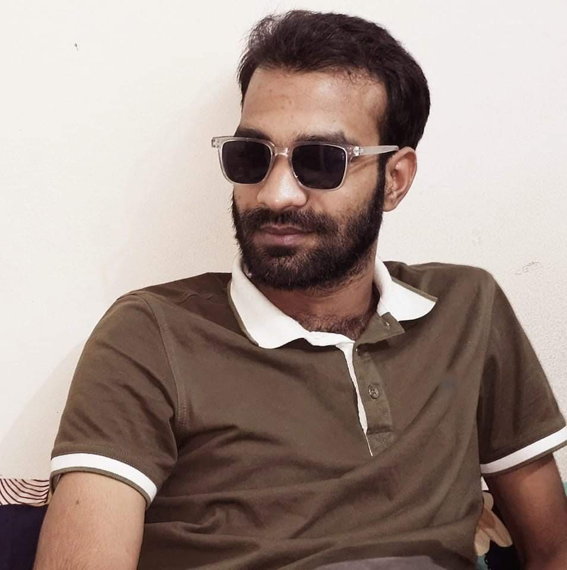

BSc in Textile Engineering from Primeasia University (2023). Passionate about Textile Testing, Quality Assurance, Web3, Blockchain and the Arc Ecosystem.

I am a Textile Engineer from Bangladesh with experience in Physical Laboratory Testing and Quality Assurance. Alongside my engineering career, I actively contribute to the Web3 ecosystem as an Arc Builder through community engagement, content creation, and blockchain exploration.
Laboratory report management system for textile testing.
Personal portfolio highlighting Web3 and Arc ecosystem contributions.
Educational content and community engagement for Web3 projects.
📧 rabbyjava6060@gmail.com
📍 Mymensingh, Bangladesh